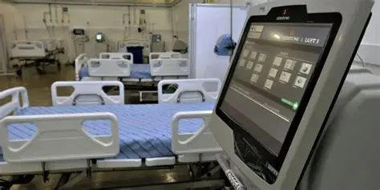

Saúde
Saúde em Casa
Profissionais e voluntários visitam idosos que vivem sozinhos para acompanhar a saúde, levar orientação e reduzir o isolamento.
82% da meta já foi alcançada. A doação ajuda no transporte, kits de atendimento e formação dos voluntários.
